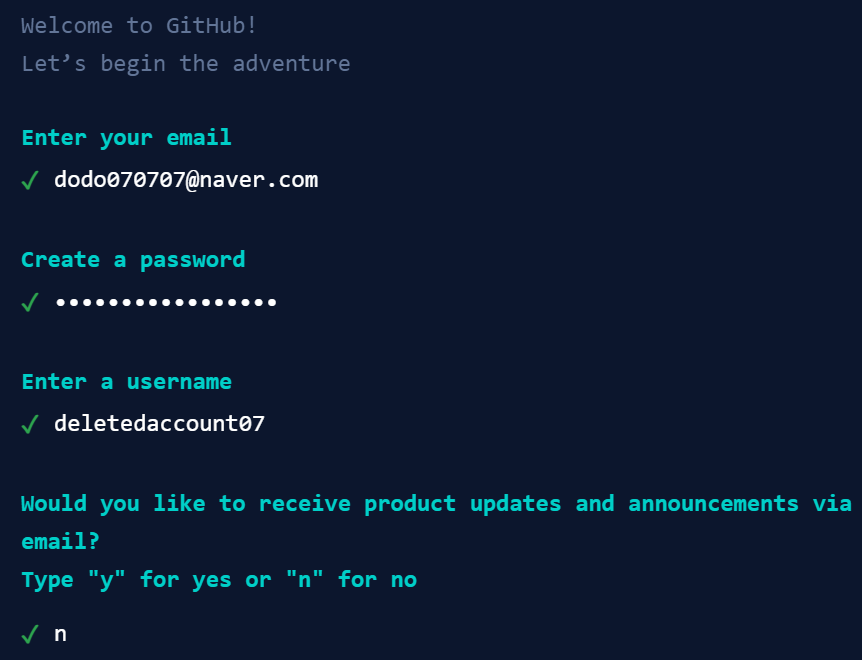
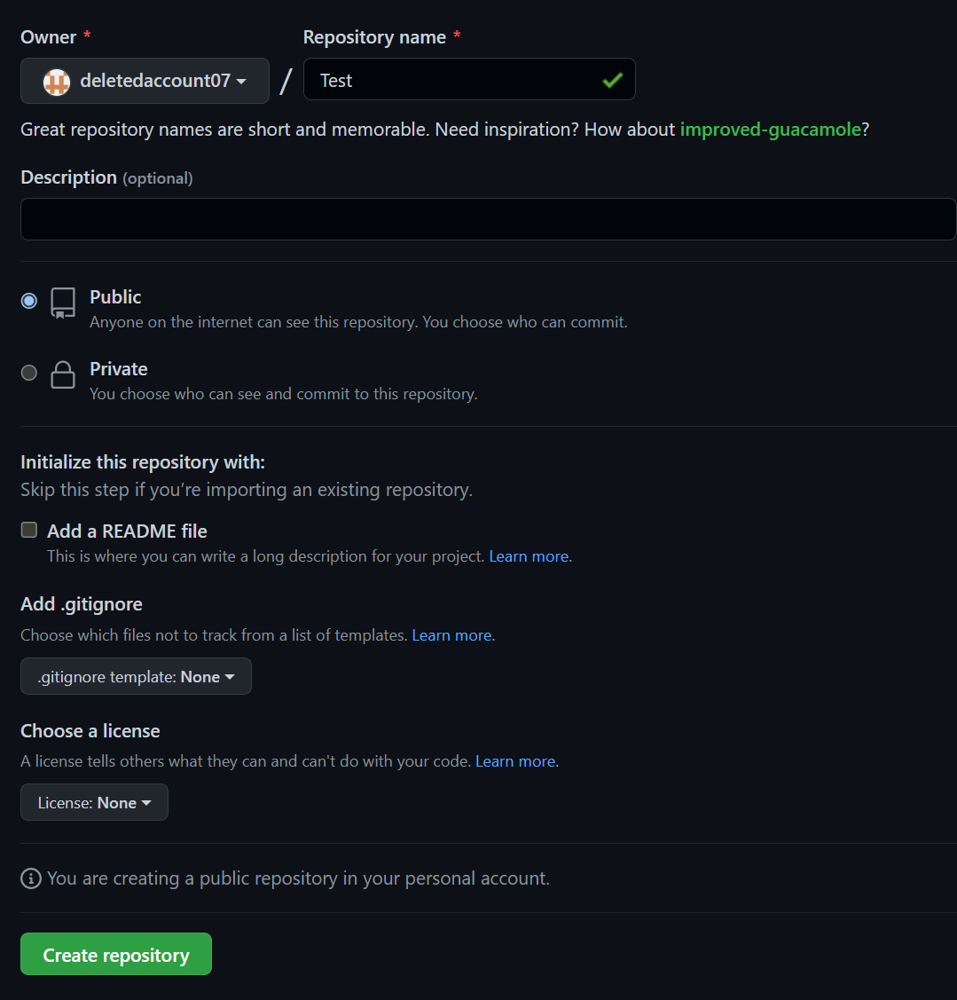
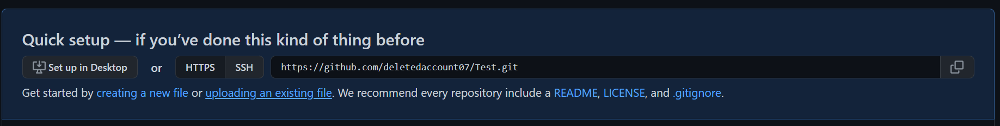
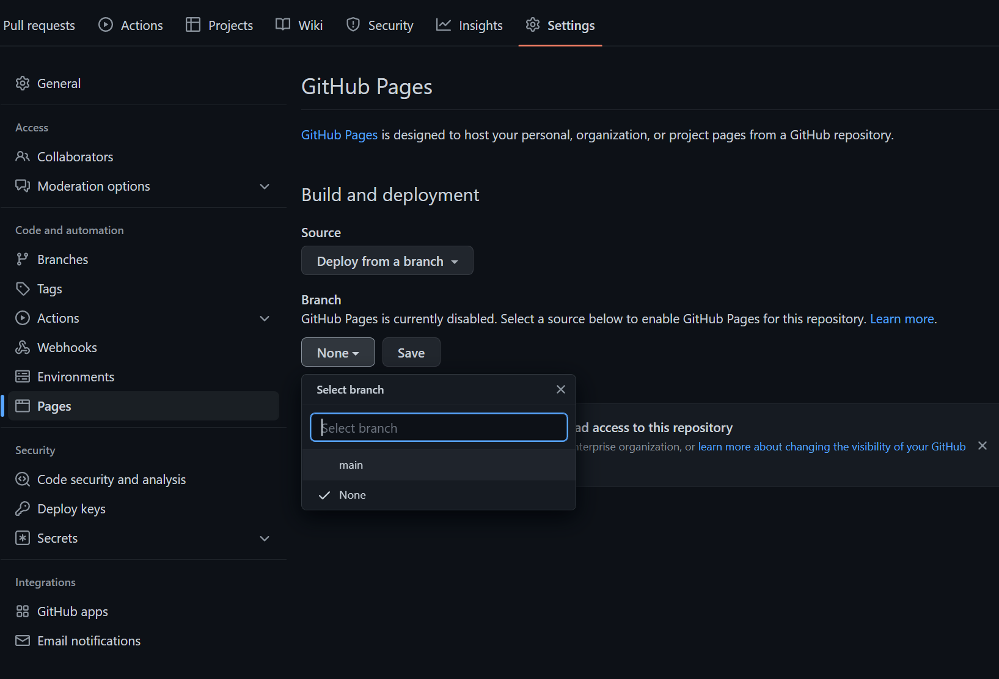
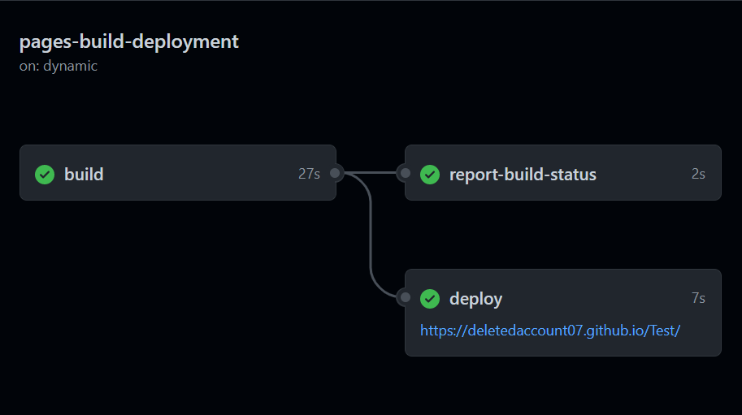

설명에 앞서
이 페이지는 입문자들을 위한 페이지인만큼, git의 사용법을 알려드리기 보다는 간단하게 웹페이지를 호스팅할 수 있는 github의 웹호스팅 기능을 소개드립니다.
계정만들기
1 .우측 상단의 sign up을 클릭합니다
2.아래와 같이 순서대로 이메일/비밀번호/닉네임을 설정해줍니다.
사진에 나와있는 이메일과 닉네임은 필자의 가계정입니다.
가장 마지막 질문은 업데이트등 마케팅 수신 정보 동의로 y로 동의, n으로 거부할 수 있습니다.

저장소 만들기
1. 오른쪽 상단의 +를 누르고, New Repository를 클릭한다.
2. Repository name에 저장소 이름을 입력하고, Public(전체공개)나 Private(본인만 볼 수 있음)중 고르고, 아래의 Create repository를 클릭한다.

파일 업로드하기
1. 저장소를 생성한 후, 나오는 페이지에 있는 uploading an existing file을 클릭한다.

2. 다음에 나오는 화면에 파일을 드래그하거나, choose your files을 눌러 직접 탐색한다.
3. 약 2~5분 정도를 기다린 후 제일 페이지 제일 아래쪽에 있는 Commit changes를 클릭한다.
4.업로드를 기다리며 Settings를 누르고, 왼쪽 리스트에 있는 Pages를 누른다.
5. branch 영역의 None을 Main으로 변경, Save버튼을 눌러준다.

6. 업로드 중 진행상황은 Actions칸에서 확인할 수 있다.
7. 업로드 완료 후 Actions칸에 출력되는 링크를 클릭하면 직접 만든 웹페이지를 확인해볼 수 있다.
